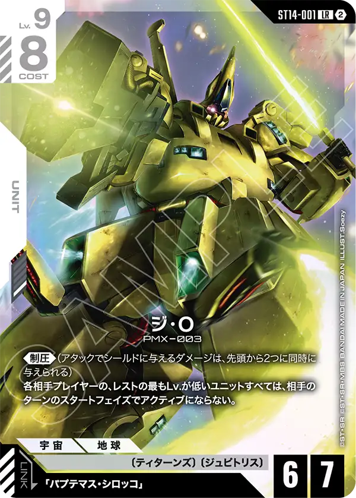
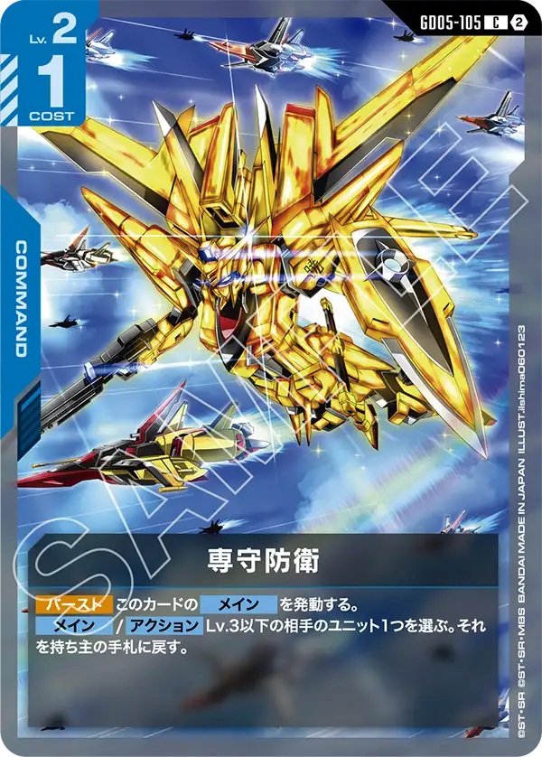
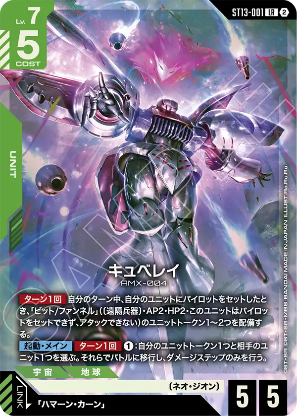
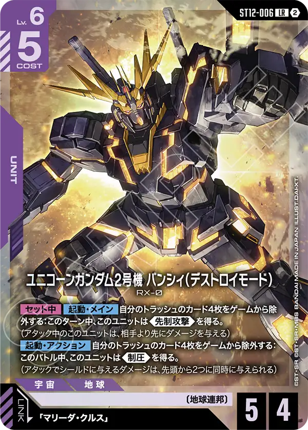
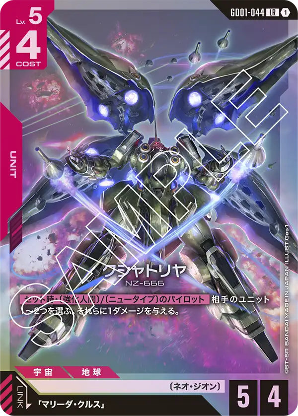

10/19〜10/25に開催された34大会の入賞336デッキを、前週（10/12〜10/18・101大会・960デッキ）と比べた。対象はシリアルカードチャレンジ 10月。入賞デッキは大会結果に順位が載ったデッキすべてで、上位4位だけを使う相性表とは母数が違う。
デッキカラー別の入賞割合
| デッキカラー | 前週 | 今週 | 差 |
|---|---|---|---|
| ↑ 赤/白 | 23.8% (228) | 31.2% (105) | +7.5pt |
| ↗ 緑/紫 | 17.9% (172) | 21.4% (72) | +3.5pt |
| ↓ 青/白 | 16.2% (156) | 11.9% (40) | −4.3pt |
| → 青/緑 | 13.3% (128) | 11.9% (40) | −1.4pt |
| ↓ 青/紫 | 15.6% (150) | 9.8% (33) | −5.8pt |
| → 緑/白 | 4.4% (42) | 4.2% (14) | −0.2pt |
| → 青/赤 | 2.8% (27) | 4.2% (14) | +1.4pt |
| → 赤/紫 | 3.5% (34) | 3.0% (10) | −0.6pt |
| → その他（2種） | 2.4% (23) | 2.4% (8) | ±0.0pt |
矢印は前週からの割合の差で、↑ +4pt以上、↗ +1.5pt以上+4pt未満、→ −1.5pt超+1.5pt未満、↘ −4pt超−1.5pt以下、↓ −4pt以下。
デッキカラーごとの採用カード
採用率は、そのデッキカラーの入賞デッキのうちそのカードを1枚以上入れた割合。急上昇は、両方の週で30デッキ以上あるデッキカラーで、採用率が10pt以上上がったカードのうちいちばん上がった1枚。
赤/白 ↑（105デッキ）


赤白は先週と変更がなくある程度研究は完了したのだと考えられる。
来週末からはGD06のカードも利用可能になるのでこのタイミングで研究が完了しているのは次の環境の研究期間の短縮にもつながるだろう。
緑/紫 ↗（72デッキ）


緑紫はシャア・アズナブル[GD05-093]とシャア・アズナブル[ST03-011]を採用した型が多かったがここに来て少し昔の型に戻った印象がある。
ガンダム・バルバトス（第1形態）[GD02-054]の採用が先々週は低下していたが、先週には8割に戻る形となった。
やはりカードパワーが高い事がわかる急上昇カードとなっている。
採用率が戻ったのも5.5弾環境の研究結果といえる。
青/白 ↓（40デッキ）



青白に関しては多少苦手としていた緑紫が構築を変更してきた影響もあってか入賞の割合を落とした。
急上昇カードはジ・O[ST14-001]となっているが、これが予想出来た人は少ないだろう。
ジ・O[ST14-001]が採用されたデッキが3店舗で複数名入賞していた。
採用率は22.5%とそこまで多くは無いものの、同系統や後ろに重きを置き高レベルユニット単騎で構える事があるデッキには脅威と言えよう。
先週はアグロ対策としてマッド・アングラー[ST11-016]が急上昇カードに選出されていたが、今週は後ろ寄りのデッキに関する対策カードが急上昇カードになると言う幅の広い対応ができるデッキなのは間違い無いだろう。
来週末からのGD06では〔オーブ〕の新カードも登場するのでさらなる強化が期待できるだろう。
青/緑 →（40デッキ）



青緑の急上昇カードは専守防衛[GD05-105]、青の入っている一部デッキで採用されていたカードが、青緑でも採用されてきた。
前回集計時では49.2%と高めの採用率だったが、ついに65%を超える採用率となり、対アグロがより警戒されている事がうかがえる。
GD06には低レベルの青、緑のカードが複数登場するのでよりアグロに寄った型が登場するのでは無いかと予想する。
青/紫 ↓（33デッキ）

青紫は緑紫と同様にガンダム・バルバトス（第1形態）[GD02-054]が急上昇カードとして戻ってきた。
最近別の型が開発されてきたが、ガンダム・バルバトス（第1形態）[GD02-054]のパワーはやはり外せないと言う結果になったのだろう。
GD06の紫はジオンやアルファ殺しが中心となるので相性がとても良いカードは一目では見受けられないが、研究によっては採用に足りうるカードが発見されるかもしれないので過去の栄光を取り戻せるように研究は必要になるだろう
緑/白 →（14デッキ）

青/赤 →（14デッキ）


赤/紫 →（10デッキ）


もっと詳しく見る
大会ごとの結果やデッキタイプの割合は、シリアルカードチャレンジ 10月の環境分析で見られる。
数え方
週は月曜から日曜で区切る。デッキリストが公開されていない入賞デッキは数に入れていない（今週0件・前週0件）。
※数字は当サイトが公式の大会結果から自動で集めたデータの集計。誤りに気づいたらXアカウント（@gcg_stats）のDMへ。